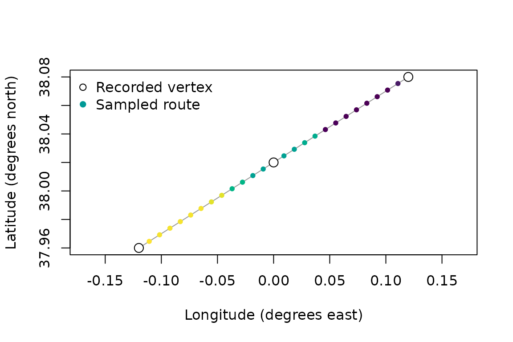
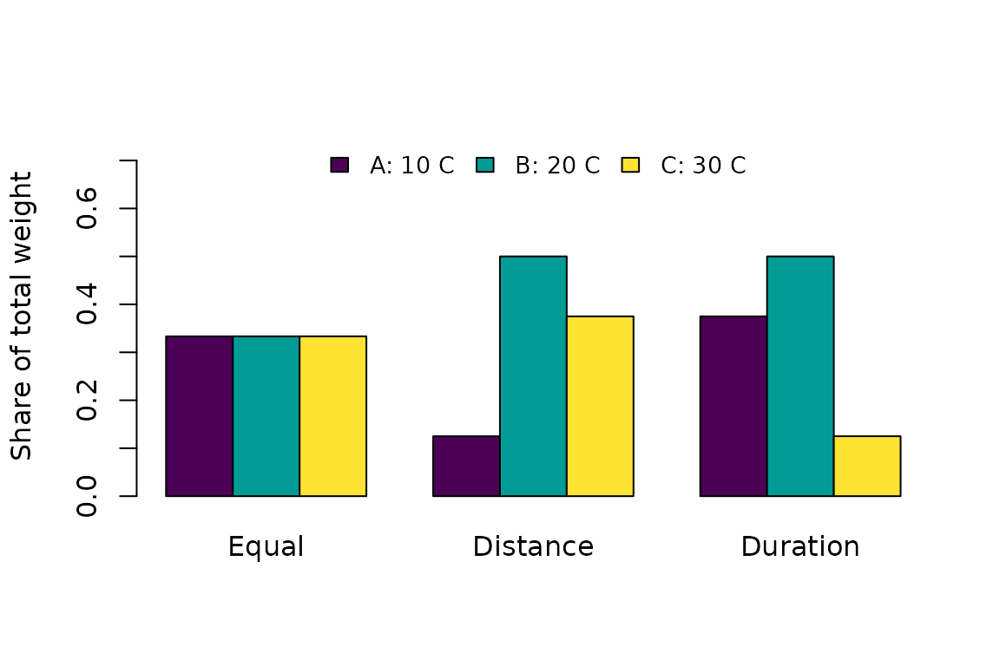
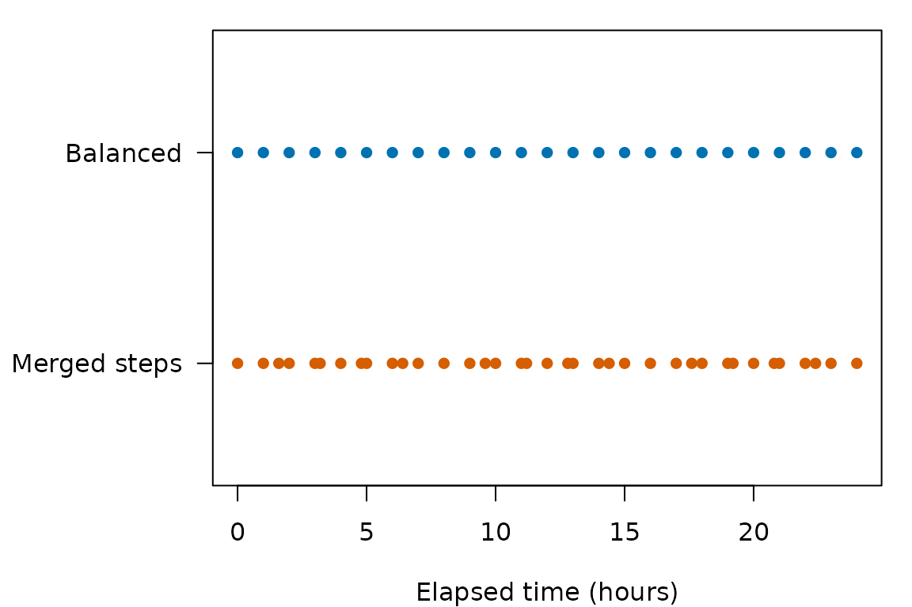

Extracting environmental data along tracks
Source:vignettes/articles/extracting-environmental-data-along-tracks.Rmd
extracting-environmental-data-along-tracks.RmdA marine observation may describe a journey rather than a single location. A trawl moves through several grid cells during a haul. An animal tracked at intervals may also meet different conditions between its recorded positions. Assigning one temperature to the midpoint can miss this variation.
However, the line connecting two positions is an assumption. We don’t know that an animal followed the shortest route, moved at a constant speed or changed depth steadily. Those choices should be visible in our analysis.
What environmental conditions occur along a trajectory, and how do our sampling assumptions change its summary?
In this tutorial we use extract_to_track() to follow a
fictional trawl, compare observed vertices with samples between them,
and then explore a dive whose depth and time change. The temperatures
come from the same small, real Copernicus Marine subset used in the point extraction
tutorial. The trajectories are fictional teaching examples, not
observed fishing or animal movements. No downloads or credentials are
needed.
extract_to_track() runs three steps, which the workflow article
writes out:
-
Build:
as_vector3d()turns the vertices of each track into a line, andsample_3d()places points along it. -
Intersect:
extract()reads the value at each point, or, with a radius,buffer_3d(),crop(),as_voxel()andmask()keep the values in a buffer around it, andsummarise_3d()gives their mean. - Summarise: the values of each track’s samples are summarised, each weighted by the distance or time it stands for.
Environmental values are taken from the grid cell, depth level and time step each sample falls in. They are never interpolated between grid values.
Our research question
Imagine a trawl haul recorded at three locations. We want to describe the deeper environmental conditions along its path, rather than use a single representative point.
Here, method = "bottom" means the deepest model level
with a value at each sampled position. It doesn’t establish the actual
seabed depth or show that the fishing gear was at this depth.
Getting started: preparing our data
Run the code from the repository’s vignettes/articles/
directory, as when building this article. The example netCDF and its
attribution accompany the point article in point-data/.
Drawing helpers in buffer-data/ are shared with the buffer
tutorial; all extractions use the package’s exported functions.
library(ocean3d)
nc_file <- file.path("point-data", "temperature-points.nc")
source(file.path("buffer-data", "figures.R"))
haul <- data.frame(
haul = "haul_A",
lon = c(-0.12, 0, 0.12),
lat = c(37.96, 38.02, 38.08),
date = as.Date("2026-09-20")
)
haul
#> haul lon lat date
#> 1 haul_A -0.12 37.96 2026-09-20
#> 2 haul_A 0.00 38.02 2026-09-20
#> 3 haul_A 0.12 38.08 2026-09-20Rows are in the order they were travelled;
extract_to_track() doesn’t sort a route by date. With
several tracks, set track_col to the column that groups the
positions into tracks. Each track needs at least two vertices, and a
vertex without coordinates is an error, so an unknown gap can’t silently
become a connecting segment.
Step 1: Extracting at the recorded positions
First, use only the vertices. Each vertex takes the value of the cell, depth level and time step it falls in, as a point does.
observed <- extract_to_track(
data = haul, nc = nc_file, var = "thetao", track_col = "haul",
method = "bottom", output_col = "temperature"
)
observed$samples[c("track_id", "sample_id", "lon", "lat", "temperature")]
#> track_id sample_id lon lat temperature
#> 1 haul_A 1 -0.12 37.96 13.80234
#> 2 haul_A 2 0.00 38.02 13.76159
#> 3 haul_A 3 0.12 38.08 13.72215
observed$summary
#> track_id mean n
#> 1 haul_A 13.76192 3The result has two tables:
-
samples: the positions queried, the distance and time each stands for along the track, and their values. -
summary: one row per track, with the requested statistics andn, the number of samples with a value.
The summary doesn’t replace the individual results. For example, we
can save observed$samples as a table and analyse each
selected temperature, just as we would after point extraction.
# To save the individual results when running this tutorial manually:
# write.csv(observed$samples, "haul_sample_temperatures.csv", row.names = FALSE)Step 2: Sampling the path between vertices
sampling sets where values are read:
sampling |
Positions queried | When it is useful |
|---|---|---|
"vertices" |
Only the recorded vertices; the default without a step. | Attach conditions to recorded tag locations without assuming positions in between. |
"balanced" |
Evenly spaced points that meet every step limit; the default with a step. | Sample an assumed dive between tag records, limiting changes in kilometres, metres and hours together. |
"merged_steps" |
The evenly spaced points for the distance and depth limits, and separately a point at each time step. | Check how adding points at each time step changes the results of a depth-sampled dive. |
Every inserted position is on the same assumed trajectory. These modes change where it is queried, not which route the animal is assumed to have followed.
Balanced sampling inserts positions along the connecting route. Here, neighbouring samples are at most one kilometre apart. This distance is a maximum: the function keeps all the vertices and divides each segment into equal parts, so some intervals are shorter.
route <- extract_to_track(
data = haul, nc = nc_file, var = "thetao", track_col = "haul",
spacing_km = 1, method = "bottom",
statistic = c("mean", "sd", "min", "max"), output_col = "temperature"
)
head(route$samples[c(
"sample_id", "is_interpolated", "distance_km", "temperature"
)])
#> sample_id is_interpolated distance_km temperature
#> 1 1 FALSE 0.0000000 13.80234
#> 2 2 TRUE 0.9591421 13.80234
#> 3 3 TRUE 1.9182842 13.80067
#> 4 4 TRUE 2.8774263 13.80067
#> 5 5 TRUE 3.8365684 13.80067
#> 6 6 TRUE 4.7957105 13.80067
route$summary
#> track_id mean sd min max n
#> 1 haul_A 13.76075 0.0343227 13.71589 13.80234 27An inserted position has is_interpolated = TRUE: it
isn’t a new observation. We can count the recorded and inserted
positions:
table(route$samples$is_interpolated)
#>
#> FALSE TRUE
#> 3 24This interpolates the path, not the temperature. Each inserted location takes the value of its cell, depth level and time step, as a point does. Several nearby samples can therefore get the same value.
A one-kilometre spacing can read the same grid cell several times.
That is expected: these are positions along the route, not a list of
unique cells. Conversely, a route can cross a narrow corner of a cell
between samples without ever querying it. A smaller spacing makes this
less likely, but can’t guarantee that every cell the route crosses is
represented. One sample per grid cell is planned for
sample_3d() (#105).
plot_track_map(route$samples, observed$samples)
Figure 1. Recorded vertices and the sampled route. Inserted positions are on an assumed path; colour shows the selected deeper temperature.
Positions between vertices follow the shortest path over the Earth’s surface (the WGS84 geodesic). Distances are horizontal; they don’t include vertical travel. A route across 180 degrees longitude takes the shorter way round.
Step 3: Understanding the summary weights
Before choosing a mean, decide what should count equally: each sampled position, each kilometre travelled, or each minute spent on the route. The same selected temperatures can give different means because these are different scientific questions.
Equal weight: what is the average sampled value?
With weighting = "equal", every sampled position gets
the same weight. This is the ordinary arithmetic mean. It can be useful
when each recorded observation should count equally. With irregular
sampling, a densely recorded part of a track has more influence even if
it represents little distance or time.
Distance weight: what conditions describe the travelled route?
With weighting = "distance", the default, a sample
stands for half the distance to the previous sample plus half the
distance to the next (support_km). An endpoint gets only
its own half-segment. These lengths add up to the whole track
length.
For example, if three consecutive samples are at 0, 1 and 4 km, their distance supports are 0.5, 2 and 1.5 km. The middle sample gets half the first kilometre plus half the next three kilometres. The weights sum to 4 km.
head(route$samples[c("sample_id", "distance_km", "support_km")])
#> sample_id distance_km support_km
#> 1 1 0.0000000 0.4795710
#> 2 2 0.9591421 0.9591421
#> 3 3 1.9182842 0.9591421
#> 4 4 2.8774263 0.9591421
#> 5 5 3.8365684 0.9591421
#> 6 6 4.7957105 0.9591421
sum(route$samples$support_km)
#> [1] 24.93047The mean uses those lengths as weights. This is a numerical approximation to conditions along the route.
Duration weight: what conditions describe time spent along the route?
With weighting = "duration", the same half-interval rule
uses elapsed time (support_seconds). If our three samples
were recorded at 10:00, 11:30 and 12:00, their supports would be 45, 60
and 15 minutes. The track spends 90 minutes in its first kilometre and
only 30 minutes in its next three kilometres. A mean describing time
spent should therefore differ from a mean describing distance
travelled.
Durations are measured between UTC instants. A stationary animal can have positive time support even when its distance support is zero. A track whose samples all have zero weight, such as a stationary one with distance weights, gets equal weights.
The same three temperatures, three different answers
The following small example shows the weights without our Copernicus data. The temperatures are invented teaching values.
weight_example <- data.frame(
sample = c("A", "B", "C"),
temperature = c(10, 20, 30),
distance_support_km = c(0.5, 2, 1.5),
duration_support_minutes = c(45, 60, 15)
)
knitr::kable(weight_example)| sample | temperature | distance_support_km | duration_support_minutes |
|---|---|---|---|
| A | 10 | 0.5 | 45 |
| B | 20 | 2.0 | 60 |
| C | 30 | 1.5 | 15 |
weight_comparison <- data.frame(
question = c("Average sample", "Average kilometre", "Average minute"),
weighting = c("equal", "distance", "duration"),
mean_temperature = c(
mean(weight_example$temperature),
weighted.mean(weight_example$temperature,
weight_example$distance_support_km),
weighted.mean(weight_example$temperature,
weight_example$duration_support_minutes)
)
)
knitr::kable(weight_comparison, digits = 2)| question | weighting | mean_temperature |
|---|---|---|
| Average sample | equal | 20.0 |
| Average kilometre | distance | 22.5 |
| Average minute | duration | 17.5 |
Equal weighting gives 20 degrees C, distance weighting 22.5 degrees C, and duration weighting 17.5 degrees C. No temperature was changed: only what each temperature stands for in the mean.
weight_shares <- cbind(
Equal = rep(1 / 3, 3),
Distance = weight_example$distance_support_km /
sum(weight_example$distance_support_km),
Duration = weight_example$duration_support_minutes /
sum(weight_example$duration_support_minutes)
)
barplot(
weight_shares, beside = TRUE, col = grDevices::hcl.colors(3, "Viridis"),
ylim = c(0, 0.75), ylab = "Share of total weight",
legend.text = c("A: 10 C", "B: 20 C", "C: 30 C"),
args.legend = list(x = "top", horiz = TRUE, bty = "n", cex = 0.85)
)
Figure 2. The three sampled temperatures receive different shares of the total weight. A, B and C are the same samples in all three comparisons.
Applying each choice to our real-data example
We already have the distance-weighted result. Compare it with equal weighting, keeping the same positions and values.
To show duration weighting, add fictional UTC times to the same three recorded positions, from 08:00 to 10:00. The first segment now takes 90 minutes and the second 30 minutes. Times between the vertices are interpolated along each segment.
equal <- extract_to_track(
data = haul, nc = nc_file, var = "thetao", track_col = "haul",
spacing_km = 1, method = "bottom", weighting = "equal",
output_col = "temperature"
)
timed_haul <- haul
timed_haul$date <- as.POSIXct(c(
"2026-09-20 08:00:00", "2026-09-20 09:30:00", "2026-09-20 10:00:00"
), tz = "UTC")
duration <- extract_to_track(
timed_haul, nc_file, var = "thetao", track_col = "haul",
spacing_km = 1, method = "bottom", weighting = "duration",
output_col = "temperature"
)
data.frame(
weighting = c("distance", "equal", "duration"),
mean_temperature = c(
route$summary$mean, equal$summary$mean, duration$summary$mean
)
)
#> weighting mean_temperature
#> 1 distance 13.76075
#> 2 equal 13.76079
#> 3 duration 13.77446
sum(duration$samples$support_seconds) / 60
#> [1] 120
weight_spread <- diff(range(c(route$summary$mean, equal$summary$mean,
duration$summary$mean)))The total duration is 120 minutes. Every sample is nearest the daily time step of 20 September, so only the weights differ between the three runs. Here the three means agree to within 0.01 degrees C, because temperature changes little along this route; the invented example above shows the difference more clearly.
"sd", "min" and "max"
summarise the same samples. The standard deviation uses the same
weights, with the formula of summarise_3d(). Neighbouring
samples along a track are usually correlated, and densifying a track
doesn’t create independent observations, so the standard deviation
describes the spread of the samples, not the uncertainty of the
mean.
Step 4: Checking whether the spacing is fine enough
Try several spacings and compare the summaries. If they agree, the spacing is probably fine enough for this track and field; this can’t show that every crossed cell was visited.
spacings <- c(2, 1, 0.5)
runs <- lapply(spacings, function(km) {
extract_to_track(haul, nc_file, var = "thetao", track_col = "haul",
spacing_km = km, method = "bottom",
output_col = "temperature")
})
data.frame(
maximum_spacing_km = spacings,
samples = vapply(runs, function(r) nrow(r$samples), integer(1)),
mean = vapply(runs, function(r) r$summary$mean, numeric(1))
)
#> maximum_spacing_km samples mean
#> 1 2.0 15 13.76055
#> 2 1.0 27 13.76075
#> 3 0.5 51 13.76179
spacing_spread <- diff(range(vapply(runs, function(r) r$summary$mean,
numeric(1))))Here the means at 2, 1 and 0.5 km agree to within 0.001 degrees C, so a 1 km spacing is fine enough for this haul.
Step 5: Following a dive in depth and time
Now imagine two animal locations with different depths and times.
dive <- data.frame(
lon = c(-0.10, 0.10), lat = c(37.98, 38.06),
depth = c(30, 180),
date = as.POSIXct(c("2026-09-20 00:00:00", "2026-09-21 00:00:00"),
tz = "UTC")
)Between vertices, sample_3d() assumes that depth and UTC
time change linearly with distance along each segment. For a segment
from 20 m at 10:00 to 100 m at 11:00, its halfway position gets 60 m and
10:30. This assumes steady progress along that segment; it doesn’t say
where the animal really was between observations.
Step limits add samples when a segment changes quickly in depth or
time, even if it moves little horizontally. With
"balanced", the limits are checked together and give one
even spacing:
- The route is about 19.7 km long, which needs at least 10 intervals at 2 km.
- Depth changes by 150 m, which needs at least 15 intervals at 10 m.
- Time advances by 24 hours, which needs at least 24 intervals at one hour.
- The largest of these is 24, so the function makes 24 equal intervals: about 0.82 km, 6.25 m and one hour each, with 25 positions including the ends.
These are maximum changes, not three exact spacings that must occur together. A stationary track can still need extra samples because depth or time changes.
dive_result <- extract_to_track(
dive, nc_file, var = "thetao", spacing_km = 2,
depth_step_m = 10, time_step = 1, time_unit = "hours",
output_col = "temperature"
)
head(dive_result$samples[c("lon", "lat", "depth", "date", "temperature")])
#> lon lat depth date temperature
#> 1 -0.10000000 37.98000 30.00 2026-09-20 00:00:00 23.16156
#> 2 -0.09167535 37.98334 36.25 2026-09-20 01:00:00 19.16716
#> 3 -0.08334994 37.98668 42.50 2026-09-20 02:00:00 17.78095
#> 4 -0.07502378 37.99002 48.75 2026-09-20 03:00:00 16.89387
#> 5 -0.06669686 37.99336 55.00 2026-09-20 04:00:00 16.07409
#> 6 -0.05836919 37.99669 61.25 2026-09-20 05:00:00 15.91007
nrow(dive_result$samples)
#> [1] 25With the default method = "nearest", each sample takes
the level nearest its depth that has a value.
time_step = 1, time_unit = "hours" sets the largest step
along the assumed trajectory; it doesn’t change the time resolution of
the data. Each sample is matched to the time step nearest its time, here
the daily step of 20 or 21 September.
Keeping separate step cuts with merged_steps
Sometimes we want to query both sets of step positions.
merged_steps keeps the distance and depth subdivision and
adds the time subdivision, removing positions that coincide. For this
dive, the first set has 15 intervals (10 m each) and the second 24 (one
hour each). Together they give 37 positions.
merged_dive <- extract_to_track(
dive, nc_file, var = "thetao", sampling = "merged_steps", spacing_km = 2,
depth_step_m = 10, time_step = 1, time_unit = "hours",
output_col = "temperature"
)
nrow(merged_dive$samples)
#> [1] 37Both modes assume the same trajectory; the extra samples don’t add observations or reveal detail that isn’t in the grid.
balanced_hours <- as.numeric(difftime(
dive_result$samples$date, dive$date[1], units = "hours"
))
merged_hours <- as.numeric(difftime(
merged_dive$samples$date, dive$date[1], units = "hours"
))
old_par <- par(mar = c(4, 7, 1, 1))
plot(
balanced_hours, rep(2, length(balanced_hours)),
xlim = c(0, 24), ylim = c(0.5, 2.5), yaxt = "n", pch = 16,
col = "#0072B2", xlab = "Elapsed time (hours)", ylab = ""
)
axis(2, at = c(1, 2), labels = c("Merged steps", "Balanced"), las = 1)
points(merged_hours, rep(1, length(merged_hours)), pch = 16, col = "#D55E00")
Figure 3. Each dot is a requested position on the same assumed dive. Balanced sampling uses one common hourly subdivision; merged steps also keep the ten-metre subdivision.
par(old_par)Calendar months and years
Seconds, minutes, hours and days are elapsed-time units; one day is 24 hours in UTC. Months and years have different lengths and must be whole numbers. For these units, the function counts whole steps from the start of each segment, and a date that doesn’t exist in a shorter month falls on its last day. For example, from 31 January 2020, monthly steps give 29 February, 31 March and 30 April. Balanced sampling keeps these dates, and divides each month evenly only where the distance or depth limits need more points.
track_explorer(dive_result$samples)Figure 4. The assumed three-dimensional trajectory, coloured by selected model temperature. Depth is the requested path depth, not an interpolated environmental layer.
Rotate the figure and look at the hover labels. Requested depths change smoothly along the assumed route, but the selected values can change in steps, because they come from the grid’s levels and time steps. The three display axes are scaled separately for readability; the view isn’t a physical scale model of horizontal distance against depth.
Step 6: Summarising a buffer around each sample
A sample takes the value of one cell. To describe the water around
the route instead, give each sample a buffer: a circle of
horizontal_radius_km and a depth window of
depth_radius_m above and below it. Each sample then gets
the mean of the values in its buffer, weighted by the volume of each
cell and level, and temperature_n, the number of values. A
cell counts when the circle touches it, and a level when its slab of
water overlaps the depth window, as in
extract_to_buffer().
buffered <- extract_to_track(
dive, nc_file, var = "thetao", spacing_km = 2,
depth_step_m = 10, time_step = 1, time_unit = "hours",
horizontal_radius_km = 3, depth_radius_m = 10,
output_col = "temperature"
)
head(buffered$samples[c("sample_id", "depth", "temperature",
"temperature_n")])
#> sample_id depth temperature temperature_n
#> 1 1 30.00 22.12714 42
#> 2 2 36.25 20.12696 42
#> 3 3 42.50 17.97879 30
#> 4 4 48.75 17.06606 30
#> 5 5 55.00 16.16729 20
#> 6 6 61.25 15.90890 20
data.frame(
per_sample = c("value at the sample", "mean in a 3 km buffer"),
track_mean = c(dive_result$summary$mean, buffered$summary$mean)
)
#> per_sample track_mean
#> 1 value at the sample 15.41328
#> 2 mean in a 3 km buffer 15.43586The track mean then averages the buffer means, weighted by distance as before. Here it differs from the mean of the values at the samples by about 0.02 degrees C. Neighbouring buffers can share grid cells, so their means aren’t independent.
Step 7: Recognising gaps and missing values
A sample takes the value of the cell that contains it, so a route
that leaves the grid has values along one part and NA along
the rest. One warning counts the samples that get NA. The
summary uses only the samples with a value: compare n with
the number of samples to see how much of the track has values.
outside <- haul[c(1, 3), ]
outside$lon[2] <- 0.4
partial <- extract_to_track(
outside, nc_file, var = "thetao", track_col = "haul",
spacing_km = 1, method = "bottom"
)
#> Warning: 20 of 49 samples get NA: 20 outside the grid or without a value.
partial$summary
#> track_id mean n
#> 1 haul_A 13.79701 29
nrow(partial$samples)
#> [1] 49Here 29 of the 49 samples have a value. To drop a summary built on
too little of the track, filter on n.
max_samples caps the number of positions across all
tracks. If a spacing would need more, the call stops with an error
instead of building a very large result:
# A one-metre spacing would need far more than 100 positions.
extract_to_track(
haul, nc_file, var = "thetao", spacing_km = 0.001, max_samples = 100,
method = "bottom"
)
#> Error:
#> ! Track sampling exceeds max_samples.Checking that the route stays at sea
A connecting line isn’t necessarily a plausible marine route. Two
locations can both be at sea while the shortest line between them
crosses a peninsula or island, and closer samples still follow the same
line. A finite temperature doesn’t prove that the route stays at sea,
and an NA doesn’t prove land: it may mean the data has no
value there.
extract_to_track() doesn’t yet check segments against
land; this is planned for sample_3d() (#105). Until then,
check the samples, or the lines between vertices, against a land polygon
with sf before summarising them, and add waypoints or split the track
where a connection crosses land.
Step 8: Working with LINESTRING features
Track extraction takes a table of vertices, or sf POINT features. A
spatial line is converted to vertices first.
sf::st_coordinates() returns one row per vertex, with
X and Y coordinates and an L1
column numbering the lines, so each line becomes one track. Transform
the line to longitude and latitude first, and add any dates or depths as
columns of the vertex table.
line <- sf::st_sf(
haul = "haul_A",
geometry = sf::st_sfc(sf::st_linestring(as.matrix(haul[c("lon", "lat")])),
crs = 4326)
)
line_vertices <- as.data.frame(
sf::st_coordinates(sf::st_transform(line, 4326))
)
line_vertices$date <- as.Date("2026-09-20")
line_result <- extract_to_track(
line_vertices, nc_file, var = "thetao", lon_col = "X", lat_col = "Y",
track_col = "L1", spacing_km = 1, method = "bottom"
)
line_result$summary
#> track_id mean n
#> 1 1 13.76075 27Split multipart lines into separate lines first, so that disconnected parts aren’t joined.
Summary
- We took the temperature at a trawl’s recorded vertices, and at samples along the route between them.
- We compared equal, distance and duration weights: they answer different questions about the same samples.
- We checked that the sample spacing is fine enough, followed a dive whose depth and time change, and summarised a buffer around each sample.
- We saw how samples off the grid are counted and left out of the summary.
Use point extraction for recorded locations and buffer extraction for the values around an observation. Track extraction adds an assumed connecting route. Environmental values aren’t interpolated, and routes aren’t checked against land yet.
Environmental data: E.U. Copernicus Marine Service Information; doi:10.48670/mds-00375. The point tutorial documents the subset, licence and preparation. The trajectories are fictional.
All arguments and defaults
Expand or collapse the complete extract_to_track() signature
This signature is generated from the current function. Arguments without a default need a value. For vectors of alternatives, the first is the default.
extract_to_track(
# Data and sources
data, nc, var = NULL, track_col = NULL,
# Route sampling
sampling = NULL, spacing_km = NULL,
# Depth along the route
depth_step_m = NULL,
# Time along the route
time_step = NULL,
time_unit = c("hours", "minutes", "seconds", "days", "months", "years"),
# Horizontal buffer
horizontal_radius_km = 0,
# Depth buffer
depth_radius_m = 0,
# Track summary
statistic = "mean", weighting = c("distance", "duration", "equal"),
# Depth selection
method = NULL,
# Observation and output columns
lon_col = "lon", lat_col = "lat", depth_col = "depth", date_col = "date",
output_col = NULL,
# Source dimensions
lon_dim = NULL, lat_dim = NULL, depth_dim = NULL, time_dim = NULL,
# Temporal selection
time_match = c("nearest", "exact"), max_time_diff = NULL,
# Route limits
max_samples = 100000L
)| Decision | Choices, meaning and default |
|---|---|
| Data and grouping |
data holds the vertices (a table or sf
POINT features); nc the data (a netCDF file, a series of
files on one grid, an open connection or a SpatProxy).
var = NULL detects the only variable;
track_col = NULL reads the input as one track. |
sampling |
"vertices" uses the recorded vertices;
"balanced" spaces points evenly to meet every step limit;
"merged_steps" keeps separate distance and depth cuts and
time cuts. Default: vertices without a step, balanced with one. |
| Route steps |
spacing_km, depth_step_m and
time_step default to NULL: no step. Give the largest
horizontal distance, depth change or time between points. |
time_unit |
"seconds", "minutes",
"hours" and "days" are elapsed units (a day is
24 hours); "months" and "years" are whole UTC
calendar steps, clamped at month ends. Default:
"hours". |
| Buffers |
horizontal_radius_km = 0 takes the value
at each sample; a positive radius summarises the values in a buffer
around it, with depth_radius_m metres above and below for a
variable with depth. |
method |
Without a buffer, the depth level each sample takes:
"nearest" (default; the nearest level with a value),
"nearest_level" (the nearest level, even without a value),
"bottom" (the deepest level with a value) or
"surface". |
statistic |
"mean" (default), "sd",
"min" and "max" of each track’s samples;
choose one or several. |
weighting |
"distance" (default) weights each sample
by the route length it stands for, "duration" by the time,
"equal" gives each sample the same weight. |
| Time matching |
time_match = "nearest" (default) takes the
nearest time step, "exact" the step equal to the sample’s
time; max_time_diff caps a nearest match, in days. |
| Columns and dimensions |
lon_col, lat_col,
depth_col and date_col name the vertex
columns; output_col = NULL names the value column after the
variable. lon_dim, lat_dim,
depth_dim and time_dim override the detected
netCDF dimensions. |
| Safety limit |
max_samples = 100000L caps the number of
positions across all tracks. |
See extract_to_track()
for the output columns.